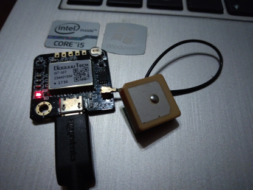
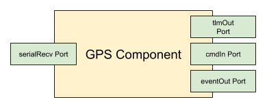
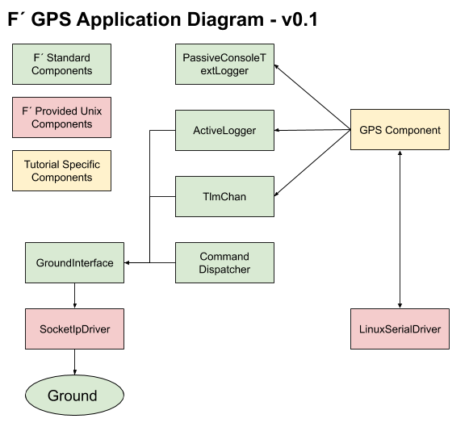
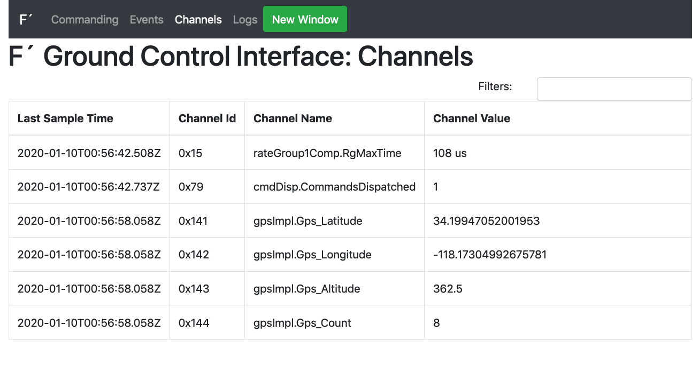
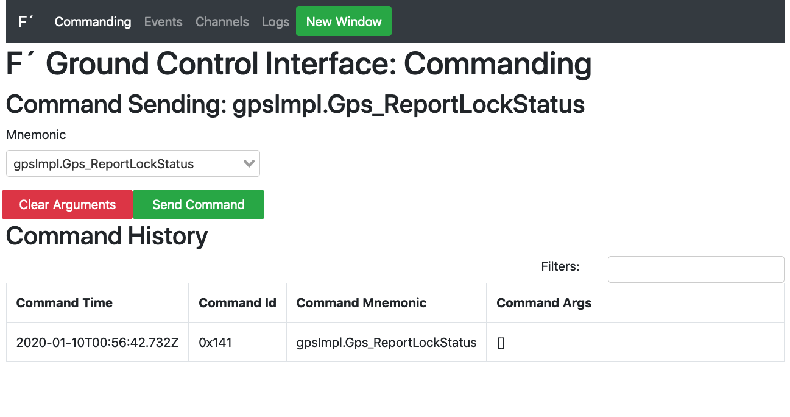
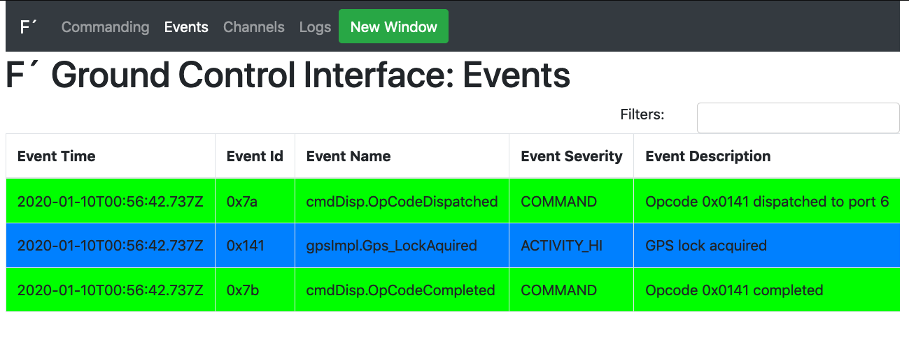

F´ GPS Tutorial
In this guide, we will cover the basics of working with F´ by attaching a GPS receiver to a serial driver and running the application on a Raspberry PI. In order to fully benefit from this tutorial, the user should acquire any NMEA compatible UART GPS receiver and a raspberry pi. In this tutorial, we use a NMEA GPS receiver with micro-USB such that the code may be run on both the laptop and the Raspberry PI.
In the DIY electronics community there is an abundance of cheap GPS receivers based around the NMEA protocol. These receivers may support a USB interface pretending to be an ACM device for basic serial communication. The messages these receivers send are NMEA formatted ASCII text.

This tutorial will show how to integrate one of these GPS receivers with the F´ framework by wrapping it in a Component and defining commands, telemetry, and log events. We will create a GpsApp deployment for the Component where it will be wired to a standard UART driver in order to receive messages. Then we can cross compile it for the Raspberry PI and run the application against the F´ ground system.
Note: A completed version of this tutorial app is available here for use as a demo or to help debug issues that come up when going through the tutorial.
Prerequisites
This tutorial requires the user to have some basic software skills and have installed F´. The prerequisite skills to understand this tutorial are as follows:
1) Working knowledge of Unix; how to navigate in a shell and execute programs 2) An understanding of C++, including class declarations and inheritance 3) An understanding of how XML is structured 4) An understanding of the raspberry pi, specifically SSHing into the pi and running applications
Installation can be done by following the installation guide found at: INSTALL.md. This guide will walk the user through the installation process and verifying the installation. In addition, users may wish to follow the Getting Started Tutorial in order to get a feel for the F´ environment and tools.
Creating a Custom F´ Component
In this next section we will create a custom F´ component for reading GPS data off a UART based GPS module. It will receive data from a UART read port, process the data, and report telemetry from that data. We will then finish up by adding an event to report GPS lock status when it changes and a command to report lock status on demand.
Our custom component has the following functional block diagram:

Note: there are a few other ports our component will need to wire to other components in the system, the above diagram captures the ports needed for our desired functionality.
Designing the GPS Component
The F’ designs are specified by XML files that are processed by code generators to create C++ source and header files. An XML file represents a single entity in the F´ system (Component, Port, Serializable, or Deployment). Command, Event, and Telemetry Channel specifications are also written in XML. Further information is in the full F´ user guide. User Guide. This application does not need any custom ports, as we are using the standard ports to create our GPS handler. Custom ports can be seen in the Math Component Tutorial.
In this section we will create a directory for our GPS component, and design the component through XML. The first step to making the component is to make a project directory to hold our project, and a component subdirectory for our GPS.
cd fprime
mkdir -p GpsApp/Gps
cd GpsApp/Gps
Gps subdirectory.
Next, in the GPS subdirectory, we will create a file called GpsComponentAi.xml filled with the below text. This represents our component's design by defining the ports it uses to connect with other components and the files used to specify commands, telemetry, and events. As can be seen, we are creating our component with 8 ports, the 4 functional ports defined above, and 4 additional ports described below:
- cmdIn: an input port of Fw::Cmd type used to process commands sent to this component.
- cmdRegOut: an output port of Fw::CmdReg type used to register this component's with the command dispatcher
- cmdResponseOut: an output port of Fw::CmdResponse type used respond to dispatched commands
- eventOut: an output port of Fw::Log type used to send events out
- textEventOut: an output port of Fw::LogText type used to send events in a text form
- tlmOut: an output port of Fw::Tlm type used to send out telemetry channels
- serialRecv: an input port of type Drv::SerialRead used to receive serial data buffers,
- serialBufferOut: an output port of type Fw::BufferSend used at startup to supply buffers to the serial driver
Input ports are invoked from external components, and must be handled by the component. Output ports are used by this component to invoke actions of other components. Here cmdIn and serialRecv are inputs for commands and serial data respectively. Each will define a handler (seen later) to handle these invocations. All other ports are used to invoke other components to send data buffers, events, telemetry, etc.
The GpsComponentAi.xml file in the Gps subdirectory should look like:
<?xml version="1.0" encoding="UTF-8"?>
<?xml-model href="../../Autocoders/schema/ISF/component_schema.rng" type="application/xml" schematypens="http://relaxng.org/ns/structure/1.0"?>
<!-- GPS Tutorial: GpsComponentAi.xml
This is the design of GPS component. The goal is to read GPS messages from a UART port, and produce Events, and
Telemetry that represent the GPS link. This will also have a command to emit the lock status of the GPS signal. This
is an active component, meaning it will have it's own thead. It will therefore process messages at its own pace, and
will not need an external thread of execution to run on.
It has 3 standard command ports, 2 standard event ports, 1 standard telemetry port, and 2 ports to interact with the
serial driver.
-->
<component name="Gps" kind="active" namespace="GpsApp" modeler="true">
<!-- Import command ports -->
<import_port_type>Fw/Cmd/CmdPortAi.xml</import_port_type>
<import_port_type>Fw/Cmd/CmdRegPortAi.xml</import_port_type>
<import_port_type>Fw/Cmd/CmdResponsePortAi.xml</import_port_type>
<!-- Import event ports -->
<import_port_type>Fw/Log/LogPortAi.xml</import_port_type>
<import_port_type>Fw/Log/LogTextPortAi.xml</import_port_type>
<!-- Import telemetry ports -->
<import_port_type>Fw/Tlm/TlmPortAi.xml</import_port_type>
<!-- Import ports for serial driver -->
<import_port_type>Drv/SerialDriverPorts/SerialReadPortAi.xml</import_port_type>
<import_port_type>Fw/Buffer/BufferSendPortAi.xml</import_port_type>
<!-- Import command, telemetry, and event dictionaries -->
<import_dictionary>GpsApp/Gps/Commands.xml</import_dictionary>
<import_dictionary>GpsApp/Gps/Telemetry.xml</import_dictionary>
<import_dictionary>GpsApp/Gps/Events.xml</import_dictionary>
<ports>
<!-- Command port definitions: command input receives commands, command reg out, and response out are
ports used to register with the command dispatcher, and return responses to it -->
<port name="cmdIn" data_type="Fw::Cmd" kind="input" role="Cmd" max_number="1">
</port>
<port name="cmdRegOut" data_type="Fw::CmdReg" kind="output" role="CmdRegistration" max_number="1">
</port>
<port name="cmdResponseOut" data_type="Fw::CmdResponse" kind="output" role="CmdResponse" max_number="1">
</port>
<!-- Event ports: send events, and text formated events -->
<port name="eventOut" data_type="Fw::Log" kind="output" role="LogEvent" max_number="1">
</port>
<port name="textEventOut" data_type="Fw::LogText" kind="output" role="LogTextEvent" max_number="1">
</port>
<!-- Telemetry ports -->
<port name="tlmOut" data_type="Fw::Tlm" kind="output" role="Telemetry" max_number="1">
</port>
<!-- Serial ports: one to receive serial data, and one to provide buffers for the serial driver to use -->
<port name="serialRecv" data_type="Drv::SerialRead" kind="async_input" max_number="1">
</port>
<port name="serialBufferOut" data_type="Fw::BufferSend" kind="output" max_number="1">
</port>
</ports>
</component>
- The GPS component is an active component, which has a thread of its own to execute on. This was chosen as the GPS component has no realtime deadlines and is expected to run in parallel with other components in the system.
- async_input is used for the input port from the serial driver. The handler should be run on the active component's thread opposed to the invoking component's thread.
active components with async_input ports are a fairly common initial design for components. They are typically used unless the system has no thread scheduler, there are firm realtime deadlines, or other off-nominal requirements must be met. Port and component types are described in more detail in the aforementioned User Guide.
Instantiating the GPS component, and connecting it with other components in the system is done at the system level, enabling the individual components to be reused in different applications. We will see this step later, after we design our Commands, Events and Telemetry. We will also implement the C++ code as well.
Creating Commands.xml, Events.xml and Telemetry.xml Dictionaries
These three XML dictionaries define the structure of commands, events, and telemetry that our component uses. This will allow the autocoder to automatically generate the needed code to process commands, and emit events and telemetry. This allows the developer to concentrate on the specific code for the component as opposed to hand coding the structure of these entities.
First we will create a command dictionary. The purpose of our command is to report the lock status of the GPS unit. This
command will trigger code to emit an event, which will report if the GPS has "locked" status or not. Commands.xml in
the Gps subdirectory should look like the following:
<?xml version="1.0" encoding="UTF-8"?>
<?oxygen RNGSchema="file:../xml/ISF_Component_Schema.rnc" type="compact"?>
<!-- GPS Tutorial: GpsApp/Gps/Commands.xml
This defines a single command to report the lock status of the GPS. This demonstrates a simple command that is useful
when working with GPS to determine if the data should be trusted.
-->
<commands>
<!-- Define a single command that runs asynchronously on the component's own thread. The opcode "0" is relative to
the GPS component's command space. The mnemonic is the string a user will use to refer to this command. -->
<command kind="async" opcode="0" mnemonic="Gps_ReportLockStatus" >
<comment>A command to force an EVR reporting lock status.</comment>
</command>
</commands>
- We use an asyncs command for the same reason as we use async_input ports above.
- Each component defines it's own set of opcodes indexed from 0. The autocoder will prevent collisions between components by adding a prefix to the component's final opcode.
- Users typically refer to the component's mnemonic and the opcode is typically internal to the F´ system.
Next we will create an Events.xml dictionary that setup the events our component can emit. In this case we have two
events, GPS locked and GPS lock lost. The Events.xml file in the Gps subdirectory should look like:
<?xml version="1.0" encoding="UTF-8"?>
<?oxygen RNGSchema="file:../xml/ISF_Component_Schema.rnc" type="compact"?>
<!-- GPS Tutorial: GpsApp/Gps/Events.xml
This defines two events, one at activity hi level to report that lock has been acquired, and one at warning hi level to
indicate lock lost.
-->
<events>
<event id="0" name="Gps_LockAquired" severity="ACTIVITY_HI" format_string="GPS lock acquired">
<comment>A notification on GPS lock acquired</comment>
</event>
<event id="1" name="Gps_LockLost" severity="WARNING_HI" format_string="GPS lock lost">
<comment>A warning on GPS lock lost</comment>
</event>
</events>
Finally, we should create a Telemetry.xml dictionary. It will specify that we will downlink GPS latitude, GPS longitude,
GPS altitude, GPS time, and current number of satellites visible to the GPS unit. These are all standard fields emitted
GPS units and are the heart of our application. Our Telemetry.xml file in the Gps subdirectory should look like:
<?xml version="1.0" encoding="UTF-8"?>
<?oxygen RNGSchema="file:../xml/ISF_Component_Schema.rnc" type="compact"?>
<!-- GPS Tutorial: GpsApp/Gps/Telemetry.xml
This defines four telemetry channels to report basic GPS information.
-->
<telemetry>
<channel id="0" name="Gps_Latitude" data_type="F32" abbrev="GPS-0000">
<comment>The current latitude</comment>
</channel>
<channel id="1" name="Gps_Longitude" data_type="F32" abbrev="GPS-0001">
<comment>The current longitude</comment>
</channel>
<channel id="2" name="Gps_Altitude" data_type="F32" abbrev="GPS-0002">
<comment>The current altitude</comment>
</channel>
<channel id="3" name="Gps_Count" data_type="U32" abbrev="GPS-0003">
<comment>The current number of satilites</comment>
</channel>
</telemetry>
At this stage, the design of the Gps component has been completed. Before we can implement code, we need to integrate the GPS component with the build system. This will be described next.
Setting Up the Build System for Gps and GpsApp
Now it is time to create CMakeList.txt files for the GPS component, and GpsApp deployment. This will allow us to run our GPS component through the autocoder, and receive implementation templates in order to save time/effort.
First, in the Gps directory, create a module specific CMakeLists.txt file. Since we have not created any C++ files,
our CMakeLists.txt will only contain the Ai.xml file we created. We'll add C++ files once we have created them.
The CMakeLists.txt created in the Gps directory should look like this:
####
# GPS Tutorial: GpsApp/Gps/CMakeLists.txt
#
# SOURCE_FILES: combined list of source and autocoding files
# MOD_DEPS: (optional) module dependencies
#
# This file will setup the build for the Gps component. This is done by defining the SOURCE_FILES variable and then
# registering the component as an F prime module. This allows autocoding and more!
####
set(SOURCE_FILES
"${CMAKE_CURRENT_LIST_DIR}/GpsComponentAi.xml"
)
register_fprime_module()
register_fprime_module(). Next we will create an F´ deployment makefile. This links in the full F´ build system
and defines our deployment. This is needed to be able to build our Gps module. We do not yet need a full system design
(Topology), so we can perform this step now and build the Topology later.
First change to the GpsApp we created earlier. It should be the parent of the Gps subdirectory we are currently in.
cd ..
Now we will create the CMakeLists.txt file here with the following content:
####
# GPS Tutorial 'GpsApp' Deployment CMakeLists.txt: GpsApp/CMakeLists.txt
#
# This sets up the build for the 'GpsApp' Application, including the custom
# components. In addition, it imports FPrime.cmake, which includes the core F Prime
# components.
#
# This file has several sections.
#
# 1. Header Section: define basic properties of the build
# 2. F prime core: includes all F prime core components, and build-system properties
# 3. Local subdirectories: contains all deployment specific directory additions
####
##
# Section 1: Basic Project Setup
#
# This contains the basic project information. Specifically, a cmake version and project definition. It also defines our
# default paths to the F prime framework, and sets a default toolchain.
##
project(GpsApp C CXX) # Should match the directory it is in
cmake_minimum_required(VERSION 3.5)
set(FPRIME_FRAMEWORK_PATH "${CMAKE_CURRENT_LIST_DIR}/.." CACHE PATH "Location of F prime framework" FORCE)
set(FPRIME_PROJECT_ROOT "${CMAKE_CURRENT_LIST_DIR}/.." CACHE PATH "Root path of F prime project" FORCE)
##
# Section 2: F prime Core
#
# This includes all of the F prime core components, and imports the make-system. F prime core
# components will be placed in the F-Prime binary subdirectory to keep them from
# colliding with deployment specific items.
##
include("${CMAKE_CURRENT_LIST_DIR}/../cmake/FPrime.cmake")
# NOTE: register custom targets between these two lines
include("${CMAKE_CURRENT_LIST_DIR}/../cmake/FPrime-Code.cmake")
# Note: when building a deployment outside of the F prime core directories, then the
# build root must be re-mapped for use with the standard build system components.
#
# In this way, the module names can be predicted as an offset from the (new) build
# root, without breaking the standard locations of F prime.
#
# Uncomment the following lines, and set them to the BUILD_ROOT of your deployment,
# which is typically one directory up from the CMakeLists.txt in the deployment dir.
#set(FPRIME_CURRENT_BUILD_ROOT "${CMAKE_CURRENT_LIST_DIR}/..")
#message(STATUS "F prime BUILD_ROOT currently set to: ${FPRIME_CURRENT_BUILD_ROOT}")
##
# Section 3: Components and Topology
#
# This section includes deployment specific directories. This allows use of non- core components in the topology,
# which is also added here.
##
# Add component subdirectories
add_fprime_subdirectory("${CMAKE_CURRENT_LIST_DIR}/Gps/")
project(GpsApp C CXX)sets up our project. The name "GpsApp" should be the same as our chose directory.include("${CMAKE_CURRENT_LIST_DIR}/../cmake/FPrime.cmake")includes all the CMake based build utilities for F´.include("${CMAKE_CURRENT_LIST_DIR}/../cmake/FPrime-Code.cmake")includes all the F´ core code.add_fprime_subdirectory("${CMAKE_CURRENT_LIST_DIR}/Gps/")adds in our custom component as it isn't F´ core code.
Next, the user may generate an F´ build in order to begin implementing and coding our module. This can be done with the
following commands run from the GpsApp directory:
fprime-util generate
If the command reports errors, ensure the files match those above (or borrow the sample code from this Tutorial's directory) and try again.
Coding Our Module
Now it is time to code our module to read the GPS module and downlink the GPS telemetry. This is where the framework
will help us considerably. All these previous steps set us up to use the autocoding features of F´. We can generate the
basic implementation of the code by using the fprime-util impl command, which generates needed
GpsComponentImpl.cpp-tmpl and GpsComponentImpl.hpp-tmpl files. We can use these as the basis for our implementation.
In addition, the framework will also generate * Ac.?pp files, which handle the work of connecting ports allowing us
to write minimal code to support the component interface. First we generate code templates, and move them into place.
Since we don't already have implementations we can safely rename the template files without first checking for existing
files.
Change back to the Gps subdirectory and generate implementations with:
cd Gps
fprime-util impl
mv GpsComponentImpl.cpp-template GpsComponentImpl.cpp
mv GpsComponentImpl.hpp-template GpsComponentImpl.hpp
At this point, the user may open up the GpsComponentImpl.cpp file and the GpsComponentImpl.hpp file in order to see
what has been generated. The critical sections for our implementation are in GpsComponentImpl.cpp and are shown below:
51 // ----------------------------------------------------------------------
52 // Handler implementations for user-defined typed input ports
53 // ----------------------------------------------------------------------
54
55 void GpsComponentImpl ::
56 serialRecv_handler(
57 const NATIVE_INT_TYPE portNum,
58 Fw::Buffer &serBuffer,
59 Drv::SerialReadStatus &status
60 )
61 {
62 // TODO
63 }
64
65 // ----------------------------------------------------------------------
66 // Command handler implementations
67 // ----------------------------------------------------------------------
68
69 void GpsComponentImpl ::
70 Gps_ReportLockStatus_cmdHandler(
71 const FwOpcodeType opCode,
72 const U32 cmdSeq
73 )
74 {
75 // TODO
76 this->cmdResponse_out(opCode,cmdSeq,Fw::COMMAND_OK);
77 }
Implementation
In the generated implementations, we can seen that we have two actions "TODO". First we will need to implement a function called serialRecv_handler and the second is to implement a command handler for Gps_ReportLockStatus_cmdHandler. The other functions of our code are provided as functions we can use when we implement these two pieces. Those available functions are described below:
- log_ACTIVITY_HI_Gps_LockAquired: used to emit the event Gps_Lock_aquired as defined in Events.xml
- log_WARNING_HI_Gps_LockLost: used to emit the event Gps_LockLost as defined in Events.xml
- tlmWrite_Gps_Latitude: used to send down Latitude telemetry as defined in Telemetry.xml
- tlmWrite_Gps_Longitude: used to send down Longitude telemetry as defined in Telemetry.xml
- tlmWrite_Gps_Altitude: used to send down Altitude telemetry as defined in Telemetry.xml
- tlmWrite_Gps_Count: used to send down Count telemetry as defined in Telemetry.xml
- sendCommandResponse: used to respond to a sent command. Call this in the above cmdHandler.
In order to make a GPS processor that works well, we need to take the following steps:
- Create a preamble function and send some buffers for the serial driver to use
- Implement the serialRecv_handler function (called by the serial driver with one of the above buffers)
- Break down the GPS message
- Return the buffer to the serial driver
- Downlink telemetry in serialRecv_handler
- If lock is newly found, downlink a LockAcquired EVR
- If lock is newly lost, downlink a LockLost EVR
- Downlink a LockAcquired EVR in commandHandler, if lock is currently held
- Downlink a LockLost EVR in commandHandler, if lock is not currently held
- Respond to the commandHandler with a sendCommandResponse call
These steps are called out in the following implementations of these two files. Since the purpose of this tutorial is not to demonstrate how to write each line of code, the steps above are called out in comments in the code.
GpsApp/Gps/GpsComponentImpl.cpp (Sample)
// ======================================================================
// \title GpsComponentImpl.cpp
// \author lestarch
// \brief cpp implementation of the F' sample GPS receiver for a
// NMEA GPS receiver device.
//
// \copyright
// Copyright 2018, lestarch.
// ======================================================================
#include <GpsApp/Gps/GpsComponentImpl.hpp>
#include "Fw/Types/BasicTypes.hpp"
#include "Fw/Logger/Logger.hpp"
#include <cstring>
namespace GpsApp {
// ----------------------------------------------------------------------
// Construction, initialization, and destruction
// ----------------------------------------------------------------------
GpsComponentImpl ::
#if FW_OBJECT_NAMES == 1
GpsComponentImpl(
const char *const compName
) :
GpsComponentBase(compName),
#else
GpsComponentBase(void),
#endif
// Initialize the lock to "false"
m_locked(false)
{
}
void GpsComponentImpl ::
init(
const NATIVE_INT_TYPE queueDepth,
const NATIVE_INT_TYPE instance
)
{
GpsComponentBase::init(queueDepth, instance);
}
//Step 0: The linux serial driver keeps its storage externally. This means that we need to supply it some buffers to
// work with. This code will loop through our member variables holding the buffers and send them to the linux
// serial driver. 'preamble' is automatically called after the system is constructed, before the system runs
// at steady-state. This allows for initialization code that invokes working ports.
void GpsComponentImpl :: preamble(void)
{
for (NATIVE_INT_TYPE buffer = 0; buffer < NUM_UART_BUFFERS; buffer++) {
//Assign the raw data to the buffer. Make sure to include the side of the region assigned.
this->m_recvBuffers[buffer].setdata((U64)this->m_uartBuffers[buffer]);
this->m_recvBuffers[buffer].setsize(UART_READ_BUFF_SIZE);
// Invoke the port to send the buffer out.
this->serialBufferOut_out(0, this->m_recvBuffers[buffer]);
}
}
GpsComponentImpl ::
~GpsComponentImpl(void)
{
}
// ----------------------------------------------------------------------
// Handler implementations for user-defined typed input ports
// ----------------------------------------------------------------------
// Step 1: serialIn
//
// By implementing this "handler" we can respond to the serial device sending us data buffers containing the GPS
// data. This handles our serial messages. It should perform the actions we expect from the design phases.
void GpsComponentImpl ::
serialRecv_handler(
const NATIVE_INT_TYPE portNum, /*!< The port number*/
Fw::Buffer &serBuffer, /*!< Buffer containing data*/
Drv::SerialReadStatus &serial_status /*!< Status of read*/
)
{
// Local variable definitions
int status = 0;
float lat = 0.0f, lon = 0.0f;
GpsPacket packet;
// Grab the size (used amount of the buffer) and a pointer to the data in the buffer
U32 buffsize = static_cast<U32>(serBuffer.getsize());
char* pointer = reinterpret_cast<char*>(serBuffer.getdata());
// Check for invalid read status, log an error, return buffer and abort if there is a problem
if (serial_status != Drv::SER_OK) {
Fw::Logger::logMsg("[WARNING] Received buffer with bad packet: %d\n", serial_status);
// We MUST return the buffer or the serial driver won't be able to reuse it. The same buffer send call is used
// as we did in "preamble". Since the buffer's size was overwritten to hold the actual data size, we need to
// reset it to the full data block size before returning it.
serBuffer.setsize(UART_READ_BUFF_SIZE);
this->serialBufferOut_out(0, serBuffer);
return;
}
// If not enough data is available for a full messsage, return the buffer and abort.
else if (buffsize < 24) {
// We MUST return the buffer or the serial driver won't be able to reuse it. The same buffer send call is used
// as we did in "preamble". Since the buffer's size was overwritten to hold the actual data size, we need to
// reset it to the full data block size before returning it.
serBuffer.setsize(UART_READ_BUFF_SIZE);
this->serialBufferOut_out(0, serBuffer);
return;
}
//Step 2:
// Parse the GPS message from the UART (looking for $GPGGA messages). This uses standard C functions to read all
// the defined protocol messages into our GPS package struct. If all 9 items are parsed, we break. Otherwise we
// continue to scan the block of data looking for messages further in.
for (U32 i = 0; i < (buffsize - 24); i++) {
status = sscanf(pointer, "$GPGGA,%f,%f,%c,%f,%c,%u,%u,%f,%f",
&packet.utcTime, &packet.dmNS, &packet.northSouth,
&packet.dmEW, &packet.eastWest, &packet.lock,
&packet.count, &packet.filler, &packet.altitude);
//Break when all GPS items are found
if (status == 9) {
break;
}
pointer = pointer + 1;
}
//If we failed to find the GPGGA then return the buffer and abort.
if (status == 0) {
// We MUST return the buffer or the serial driver won't be able to reuse it. The same buffer send call is used
// as we did in "preamble". Since the buffer's size was overwritten to hold the actual data size, we need to
// reset it to the full data block size before returning it.
serBuffer.setsize(UART_READ_BUFF_SIZE);
this->serialBufferOut_out(0, serBuffer);
return;
}
// If we found some of the message but not all of the message, then log an error, return the buffer and exit.
else if (status != 9) {
Fw::Logger::logMsg("[ERROR] GPS parsing failed: %d\n", status);
// We MUST return the buffer or the serial driver won't be able to reuse it. The same buffer send call is used
// as we did in "preamble". Since the buffer's size was overwritten to hold the actual data size, we need to
// reset it to the full data block size before returning it.
serBuffer.setsize(UART_READ_BUFF_SIZE);
this->serialBufferOut_out(0, serBuffer);
return;
}
//GPS packet locations are of the form: ddmm.mmmm
//We will convert to lat/lon in degrees only before downlinking
//Latitude degrees, add on minutes (converted to degrees), multiply by direction
lat = (U32)(packet.dmNS/100.0f);
lat = lat + (packet.dmNS - (lat * 100.0f))/60.0f;
lat = lat * ((packet.northSouth == 'N') ? 1 : -1);
//Longitude degrees, add on minutes (converted to degrees), multiply by direction
lon = (U32)(packet.dmEW/100.0f);
lon = lon + (packet.dmEW - (lon * 100.0f))/60.f;
lon = lon * ((packet.eastWest == 'E') ? 1 : -1);
//Step 4: call the downlink functions to send down data
tlmWrite_Gps_Latitude(lat);
tlmWrite_Gps_Longitude(lon);
tlmWrite_Gps_Altitude(packet.altitude);
tlmWrite_Gps_Count(packet.count);
//Lock status update only if changed
//Step 5,6: note changed lock status
// Emit an event if the lock has been acquired, or lost
if (packet.lock == 0 && m_locked) {
m_locked = false;
log_WARNING_HI_Gps_LockLost();
} else if (packet.lock == 1 && !m_locked) {
m_locked = true;
log_ACTIVITY_HI_Gps_LockAquired();
}
// We MUST return the buffer or the serial driver won't be able to reuse it. The same buffer send call is used
// as we did in "preamble". Since the buffer's size was overwritten to hold the actual data size, we need to
// reset it to the full data block size before returning it.
serBuffer.setsize(UART_READ_BUFF_SIZE);
this->serialBufferOut_out(0, serBuffer);
}
// ----------------------------------------------------------------------
// Command handler implementations
// ----------------------------------------------------------------------
//Step 7,8: respond to a command to report lock status.
//
// When a status command is received, respond by emitting the
// current lock status as an Event.
void GpsComponentImpl ::
Gps_ReportLockStatus_cmdHandler(
const FwOpcodeType opCode,
const U32 cmdSeq
)
{
//Locked-force print
if (m_locked) {
log_ACTIVITY_HI_Gps_LockAquired();
} else {
log_WARNING_HI_Gps_LockLost();
}
//Step 9: complete command
this->cmdResponse_out(opCode, cmdSeq, Fw::COMMAND_OK);
}
} // end namespace GpsApp
GpsApp/Gps/GpsComponentImpl.hpp (Sample)
// ======================================================================
// \title GpsComponentImpl.hpp
// \author lemstarch
// \brief hpp header file for the sample F' GPS component, based on a
// NMEA GPS receiver.
//
// \copyright
// Copyright 2018, lestarch
// ======================================================================
#ifndef GpsComponentImpl_HPP
#define GpsComponentImpl_HPP
#include "GpsApp/Gps/GpsComponentAc.hpp"
// Need to define the memory footprint of our buffers. This means defining a count of buffers, and how big each is. In
// this example, we will allow the Gps component to manage its own buffers.
#define NUM_UART_BUFFERS 20
#define UART_READ_BUFF_SIZE 1024
namespace GpsApp {
class GpsComponentImpl :
public GpsComponentBase
{
/**
* GpsPacket:
* A structure containing the information in the GPS location packet
* received via the NMEA GPS receiver.
*/
struct GpsPacket {
float utcTime;
float dmNS;
char northSouth;
float dmEW;
char eastWest;
unsigned int lock;
unsigned int count;
float filler;
float altitude;
};
public:
// ----------------------------------------------------------------------
// Construction, initialization, and destruction
// ----------------------------------------------------------------------
//! Construct object Gps
//!
GpsComponentImpl(
#if FW_OBJECT_NAMES == 1
const char *const compName /*!< The component name*/
#else
void
#endif
);
//! Initialize object Gps
//!
void init(
const NATIVE_INT_TYPE queueDepth, /*!< The queue depth*/
const NATIVE_INT_TYPE instance = 0 /*!< The instance number*/
);
//! Preamble
//!
void preamble(void);
//! Destroy object Gps
//!
~GpsComponentImpl(void);
PRIVATE:
// ----------------------------------------------------------------------
// Handler implementations for user-defined typed input ports
// ----------------------------------------------------------------------
//! Handler implementation for serialRecv
//!
void serialRecv_handler(
const NATIVE_INT_TYPE portNum, /*!< The port number*/
Fw::Buffer &serBuffer, /*!< Buffer containing data*/
Drv::SerialReadStatus &serial_status /*!< Status of read*/
);
PRIVATE:
// ----------------------------------------------------------------------
// Command handler implementations
// ----------------------------------------------------------------------
//! Implementation for Gps_ReportLockStatus command handler
//! A command to force an EVR reporting lock status.
void Gps_ReportLockStatus_cmdHandler(
const FwOpcodeType opCode, /*!< The opcode*/
const U32 cmdSeq /*!< The command sequence number*/
);
//!< Has the device acquired GPS lock?
bool m_locked;
//!< Create member variables to store buffers and the data array that those buffers use for storage
Fw::Buffer m_recvBuffers[NUM_UART_BUFFERS];
BYTE m_uartBuffers[NUM_UART_BUFFERS][UART_READ_BUFF_SIZE];
};
} // end namespace GpsApp
#endif
Next, we need to add (or uncomment) our .cpp and .hpp to the CMakeLists.txt in the GpsApp/Gps subdirectory. The
final version will look like this:
GpsApp/Gps/CMakeListst.txt (final)
####
# GPS Tutorial: GpsApp/Gps/CMakeLists.txt
#
# SOURCE_FILES: combined list of source and autocoding files
# MOD_DEPS: (optional) module dependencies
#
# This file will setup the build for the Gps component. This is done by defining the SOURCE_FILES variable and then
# registering the component as an F prime module. This allows autocoding and more!
####
set(SOURCE_FILES
"${CMAKE_CURRENT_LIST_DIR}/GpsComponentAi.xml"
"${CMAKE_CURRENT_LIST_DIR}/GpsComponentImpl.cpp"
)
register_fprime_module()
Finally, run the F´ utility to build this component using fprime-util build. This will regenerate the CMake build
file, which we made with the fprime-util generate command earlier. This should pass and the code should be ready.
We'll then integrate it into a new topology.
fprime-util build
We are now ready to make a Topology for this application, and test it!
Topology
We are finally ready to build our topology to connect the GPS module up to the standard F´ components. Then we can see
if this design works by cross compiling and running it on the RPI. We'll be modifying the existing Ref topology in
order more quickly create one of our own. A more useful system diagram is shown below.

There are many components that will come "for free" by copying the Reference application. However, the key components that represent our application's flow are shown in the diagram. We to make sure that all 8 of our ports for the Gps component have been hooked-up. This involves two major steps:
- Instantiate
LinuxSerialDriverandGpscomponents - Add new port connections to wire up the
GpsandLinuxSerialDriver
We'll work through these steps below.
Clone the Ref Application
First, the Reference application's topology is copied into the Top folder of GpsApp application and we'll grab. We do this as a convenience to save time during this tutorial. It is easier and faster to start with the Reference application's files and modify them to construct our topology.
From the GpsApp directory run the following:
cp -r ../Ref/Top ./Top
rm ./Top/RefTopologyAppDictionary.xml ./Top/RefTopologyAppAi_IDTableLog.txt ./Top/RefTopologyAppID.csv
Update the GpsApp CmakeLists.txt
Now that we have a topology, we'll go ahead and update the CMakeLists.txt file in the GpsApp folder. This will
nearly complete the modifications we need for this file. You may choose later to make the raspberrypi toolchain to be
default once we start cross-compiling. We do this by adding a single line to include the Top directory at the very end
of the file.
Make sure the CMakeLists.txt in the GpsApp directory has the following line added to the end:
add_fprime_subdirectory("${CMAKE_CURRENT_LIST_DIR}/Top/")
Build the Topology Sources
A topology consists of several files that instantiate the components in C++, construct and initialize the system, and represent the "main function" or entry point into the code. These files are shown below:
- GpsTopologyAppAi.xml: the design file showing the list of components, and the connections between components. This file is based on RefTopologyAppAi.xml from the reference application with new ports added. GpsTopologyAppAi.xml should replace RefTopologyAppAi.xml.
- Components.hpp: the header file declaring in code the same components as listed in the topology ai XML, along with includes of the headers that define them.
- Topology.cpp: top level code and initialization of the components, threads, and registration of commands.
- Main.cpp: entry point to the code.
Essentially, GpsTopologyAppAi.xml is the design, Components.hpp is the definitions, and Topology.cpp is the system initialization code. All of these files are referenced by the CMake files we inherited from the reference app. Building the distribution (fprime/GpsApp) will include the topology (GpsApp/Top) as its entry-point creating a single binary, which represents our software.
Sample versions of these files are provided below, and are annotated with comments representing the changes made to support the Gps Application. Note: these files are available in a working repository at: https://github.com/LeStarch/fprime/tree/gps-application in case the user prefers a direct checkout of working code. The files are linked below:
We will also need to update the CMakeLists.txt in the Top directory to change the name of "RefTopologyAppAi.xml" to
"GpsTopologyAppAi.xml".
Once these files have been added to the GpsApp/Top folder, we have a complete project. The project can be built by changing directory to the deployment directory, issuing our build commands and then running the executable.
Running the Executable On the Native Host with the Ground System
We'll start by removing the old build generation. By adding the top folder, this will remove any issues with the build. Then we can build, and run right on the local machine. If the user has a USB based GPS receiver, the code should work.
In the GpsApp directory, build and install the code. Install will automatically build if the code has not been built.
cd GpsApp
fprime-util purge
fprime-util generate
fprime-util install
Now run the ground system in one terminal and the Gps app in the other. Here we inform the ground system that we will run the application independently.
# In GpsApp directory
fprime-gds -d . -n
Run the application binary. Note: we are currently compiling for the native OS. Linux is assumed and so is the path to the USB GPS device. If the device doesn't exist, the system will run but log an error opening it.
cd fprime/GpsApp
# For "Linux":
./bin/Linux/GpsApp -a 127.0.0.1 -p 50000 -d /dev/ttyACM0
# For "Mac OSX":
./bin/Darwin/GpsApp -a 127.0.0.1 -p 50000 -d /dev/ttyACM0
If you see output similar to the following, when running with the USB GPS you have successfully, completed the development of our tutorial. We'll discuss how to cross compile for the Raspberry PI and run on the Raspberry pi next.
Once the ground system loads in the user's browser, the user can start seeing what the software is doing. If it doesn't load, then the user should go navigate to: https://localhost:5000.
First click on the "Channels" tab at the top. The user should at least see the "rateGroup1Comp.RgMaxTime" channel. If the GPS is working and has lock, then the user should see the GPS channels as well. This is seen below. Later we will discuss what to do if this did not show up.

Next, the user should navigate to the "Commanding" tab and select "gpsImpl.Gps_ReportLockStatus" from the drop down. The user may start to type in the dropdown to subset the list. Press the green "Send" button and the command should be sent as seen below.

Finally, the user can check the "Events" tab at the top to see the lock status as we asked it to be reported.

To exit the ground system, CTRL-C the terminal process.
If the above code did not work, the user should check the following:
-
Issue the
cmdDisp.CMD_NO_OPcommand from the "Commanding" tab and check the "Events" tab. The user should expect to see NO_OP events, proving the executable is working and the data flow is working. If this does not work, then rerun the ground system and binary. Ensure no errors have been reported. Check the "Logs" tab for logs in the system and ensure there are no errors there. Make sure port 50000 is free, and that no other ground systems are running. -
Assuming the user has working
cmdDisp.CMD_NO_OP, the code is running. Thus the users should rerun the "gpsImpl.Gps_ReportLockStatus" command. If the lock status is not acquired, then the user will not see GPS channels. Sometimes the ground connection is not fast enough to see the startup events and channels, so the ground system is blank until an event happens, like the one fromcmdDisp.CMD_NO_OP.
Again, ensure the ground system and running binary have been stopped with the CTRL-C to kill the process.
Cross Compiling for the Raspberry PI
Once we have the code building for Linux, it is time to engage the raspberry pi cross compilation tools in order to build a binary that will run on the Raspberry PI. We'll be working with code for the Raspberry PI 3, but it should work on the RPI 2 as well.
Cross Compiling Explicitly
The first step is to follow the installation of the tools for the RPI cross compile as documented here: RPI Deployment README.md.
In order to cross-compile for the a specific architecture, the user needs to generate a new build directory using a
toolchain file for that architecture. F´ includes a toolchain for the raspberry PI, assuming the tools are installed in
the manner described in the above readme. This toolchain is called "raspberrypi". The build can be generated by running
the following commands in the GpsApp directory:
fprime-util generate raspberrypi
fprime-util install raspberrypi
This will generate the binary at GpsApp/bin/arm-linux-gnueabihf/GpsApp. The user then may run the ground system as
before. Ensure that the system and network firewall allow through port 50000 from the PI to the host, and then run:
fprime-gds -d . -n
Assuming there is no firewall or other network limits between the PI and the host, the user can run the following from a separate terminal run the following:
cd fprime/GpsApp
scp bin/arm-linux-gnueabihf/GpsApp pi@<raspberry pi IP>
ssh pi@<raspberry pi IP>
./GpsApp -a <ground system IP> -p 50000 -d <serial port, /dev/ttyACM0 for USB>
Now the PI should be powered up and running the embedded Linux binary, and our host system should be running the ground system. If the code work when running natively, and isn't connecting for this example the cause it likely a firewall issue. Again make sure port 50000 is exposed to the PI, and that the pi can ping the ground system machine.
Setting the Cross Compile Build as Default
As we saw above, cross compile builds can be done explicitly by setting the toolchain. However, some users may wish to
make this the default, and not need to specify it. This can be done by adding the following line to the deployment
CMakeLists.txt file at GpsApp/CMakeList.txt. This is typically done in the first few lines after the project()
call.
set(FPRIME_DEFAULT_TOOLCHAIN_NAME "raspberrypi" CACHE STRING "Default toolchain, used in generation" FORCE)
Now that this is done, we need to purge the old build files in order to ensure that we start again clean. This can be done with the following commands. Notice we are purging all previous build directories we made.
fprime-util purge
fprime-util purge raspberrypi
Now the "raspberrypi" build can be created with a call to fprime-util generate and the original native build can be
made by explicitly setting the native toolchain: fprime-util generate native.
# Raspberry PI by defaule
fprime-util generate
fprime-util install
# Native builds now explicit
fprime-util generate native
fprime-util install native
Conclusion
The GPS tutorial has shown us how to do cross compiling, and running on an embedded Linux system. We have seen how to add components, and wire them to existing drivers. We've seen how to run the ground system, and collect data!
The user is now directed back to the Tutorials for future reading. More work with the Raspberry PI can be found here: RPI README.md.